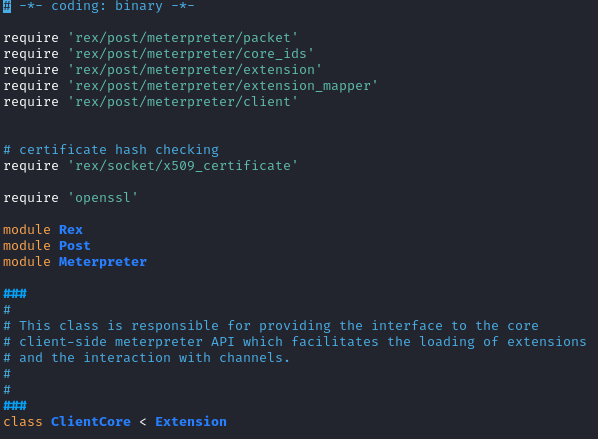

ClientCore (core) (not a typical extension)
/usr/share/metasploit-framework/lib/rex/post/meterpreter/client_core.rb
This class is responsible for providing the interface to the core client-side meterpreter API which facilitates the loading of extensions and the interaction with channels.
 Formatting on the meterpreter console:
/usr/share/metasploit-framework/lib/rex/post/meterpreter/ui/console/command_dispatcher/core.rb
Instance of the ClientCore class